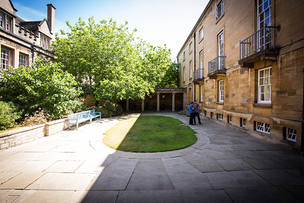

|
 This recap will only feature one video, located at the very end, but that gets compensated with a great amount of commentary by all the participants and the occasional observer. The game history is nearly complete, but note that notably the Austrian and Turkish moves were derived rather than recorded, as no notes have survived. If you would rather see the moves as a single file, here's a link to the PDF, which will open in a different tab.
Toggle:
Thanks to Marvin Fried taking pictures on each turn and Markus Zijlstra for collecting order sets from all parties, we now have a fair amount of data on the evolution of the WDC 2017 top board. We might not have every move, but more importantly we know the position at the start of every season. Time for a review.
I will be posting the complete game one season at a time at a rate of about 2 seasons per week, with pictures of the positions before and after, as well as the moves as they are known (or can be deduced). I invite every participant, Chris Brand (Austria), Nicolas Sahuguet (England), Marvin Fried (France), Ruben Sanchez (Germany), Douglas Moore (Italy), Peter Yeargin (Russia) and Conrad Woodring (Turkey), to comment on their actions (negotiations, thoughts, moves) that season. Everyone else can freely comment at any time. These comments will be compiled in an article for the F2017M issue of the Diplomatic Pouch planned for October. I know it will be hard to recall a game weeks after it has been played, but try your best. Future generations will appreciate the effort. With no further ado, let's get the show rolling. It's Spring 1901, the powers have been chosen, negotiations begin. Who did you approach and how? How did you feel about your power choice? Etc. 
We have five complete order sets for every season. Only the Austrian and Turkish are sometimes missing. I will take a stab at these for the sake of the matter. If my assumptions are wrong, please point them out and I will correct them.
Comments

All powers could build. Only Belgium is still neutral. No real surprises with the builds, except perhaps the Russian army in St. Pete. How to build out from there?
Comments
Italy is shopping around for a fifth center, England is bumped out of Norway on a questionable promise for support into Belgium. How do they distinguish between a genuine offer and a tantalizing mirage? Trust or revolt?
Comments
We're reaching a first point of stagnation, with lots of defensive moves (or rather holds) across the board. But as each Diplomacy game needs a dynamic, a will to go on the offensive, I'd like to ask each player what they see at this point as their next target, their likely next dot.
Comments
In order to relieve some pressure off Turkey, Germany hatches a plan that hurts Russia and benefits France. But France doesn't really play ball. Was this Western Triple doomed from the start?
Comments
Italy manages to pull off a convoy to Turkey and straight into a center, while tussling with Austria over Vienna. This allows Germany to direct his phalanx towards Russia. How much of this is staged, how much is genuine? Does weakening Russia play into AI's hand?
Comments
Russia's switch-and-reverse tactics in the Norwegian forces England and Germany to improvise, drawing praise from the latter, who nevertheless goes full bore against him. Meanwhile Turkey denies Austria a center for which Italy would have liked to claim a second build. Is the attack on Greece a sign of greed or a clever way to protect Trieste?
Comments
While France perfects the art of non-engagement, Austria comes to the rescue of Russia and Italy blocks a German attempt to enter Tyrolia. Switch-and-reverse successfully blocks the German advance for now. But for how much longer?
Comments

While the rest of the board tugs and pulls to get to the Russian and Turkish centers, France completely forgets to turn in any orders. Did he think it was time for a toilet break? Marvin Fried, tell us what happened.
Comments
We're right at the halfway point, when England and France (with Russian assistance) stab Germany. It's a cruelly efficient stab, as Germany is bound to lose even more centers in Fall.
Nicolas Sahuguet, this is your "moment de gloire". Tell us all about it. Comments
Attacked from all sides the German Reich crumbles, losing 4 centers in just one turn. Meanwhile Italy and Austria exchange centers as if they're on a switchboard in a train simulator game. With Germany dropping out of the race, it's still wide open with 3 powers having 7 centers and England at 6. Where will this go from here?
Comments
Italy both attacks Austria in Turkey and supports him into Russia. Austria responds by retreating his only fleet off the board instead of to Smyrna! Too submissive? What do you think?
Comments
This is the season where Turkey exits the game, the first power to do so. Conrad Woodring fought a long and valiant fight against determined opposition who eliminated him with mathematical precision. No rescue party ever reached his shores. The biggest surprise of this turn however are the two waived builds, one by Italy, one by France. Gasps and groins around the table. There's usually no mediation during minor phases, so Douglas Moore and Marvin Fried, was it something you had agreed on beforehand? And stuck to irrelevant of the Fall outcome?
Comments
Looking in vain for a new theater of conflict, pieces continue to move in their preset direction. The new Italian army pops up in Greece. More headaches for Austria.
Comments
Things are getting weird. Italy reverts his Spring convoy instead of moving another army to Bulgaria and finish the job. England, convinced now that he's fighting for second place, does not take up the gauntlet even as he has secured a build. A more aggressive England could have moved to Denmark and North Sea and built a fleet in London or Liverpool to take the fight to France. Nicolas Sahuguet, alas, where is your legendary fighting spirit?
Comments
It's Spring 1909 and France, with still a build in reserve, finally moves against England, who has dotted his island with two impressive armies. Marvin, relive for us these moments.
Comments
France presses his attack on a lethargic England, who would have done better pulling back his fleets to the North Sea and Norwegian. If fatigue is really the determining factor in this late stage, as several players have mentioned, then a Diplomacy FtF tournament is really a survival of the fittest. Charles Darwin would find it an excellent pastime and study object.
Comments
This is the final year and everyone knows it. Centers are counted, bets are hedged. Italy is in the lead with 9, followed by France at 8 and Austria and England at 7. Spring orders are revealed.
The Italian stab is in the air and so it's extremely important how Austria defends himself. We see him go all out to retake Mos and pull back an army to Bud to serve as a linchpin for the defense of his many vulnerable centers. Italy is therefore able to sneak his fleet into Rum while making room for his army to advance to Bul. With France securing Lvp and moving to protect the Lowlands, Italy must ensure that he doesn't fall behind should France also capture Mun, but he seems in an excellent position to do so. Could Austria have done better? He could have dislodged Tyr, defended Rum and/or moved to Arm to threaten taking a Turkish home center. Then it would be up to England or France to decide if it would be worth aiding him to another center like Mos or Ber. A valid strategy? Comments
The final season on the Top Board, with the WDC 2017 at stake. What are the odds?
Comments
And when all is said and done, it's time for some moving pictures featuring the award ceremony, courtesy of Don Del Grande.
|

Comments